Pawgger
FROM THE WHOPPER TO THE WORKSTATION
Play nowSourceA Frogger parody starring Colby, an orange tabby explorer who has just finished a triple whopper at the Burger King and must cross Perring Parkway to reach the Micro Center. Rat boss Perring Parkway Pete is waiting in the traffic. Three switchable looks: retro 8-bit, Ghibli-style painterly, and toon.
Screenshots
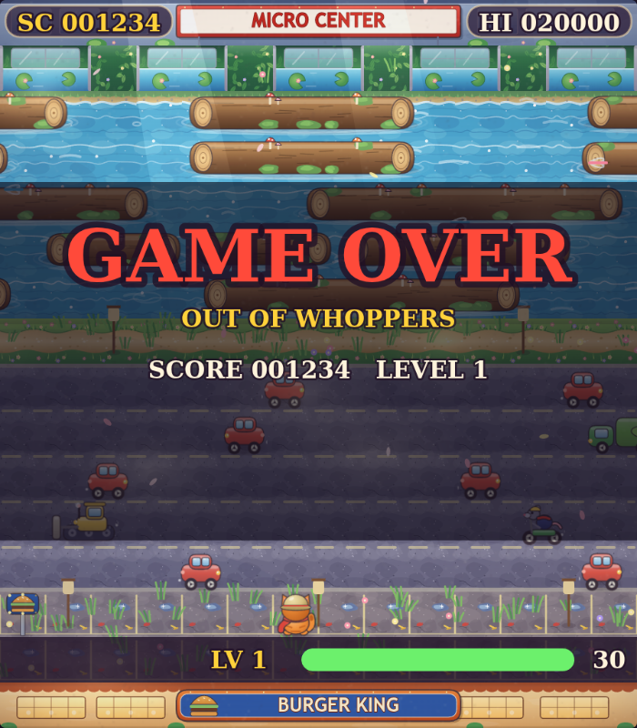
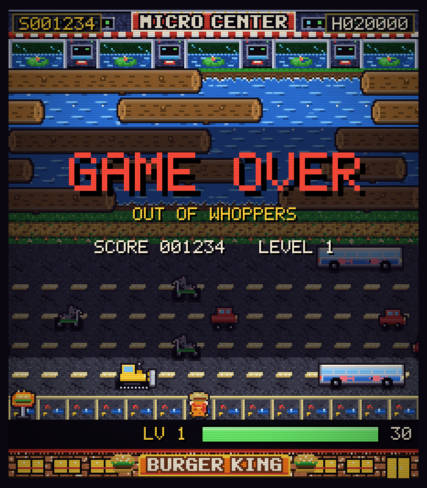
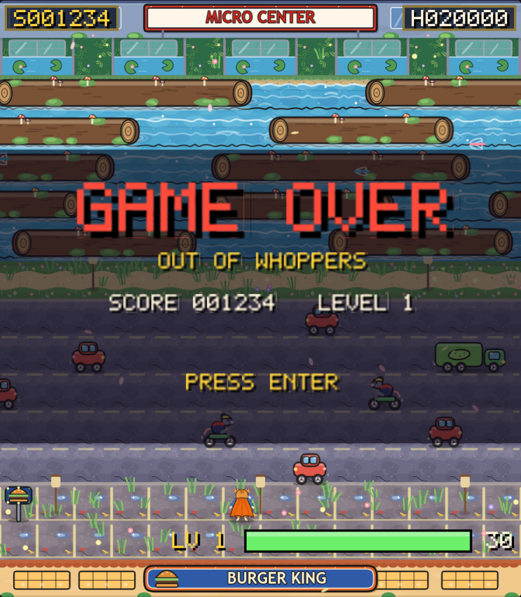
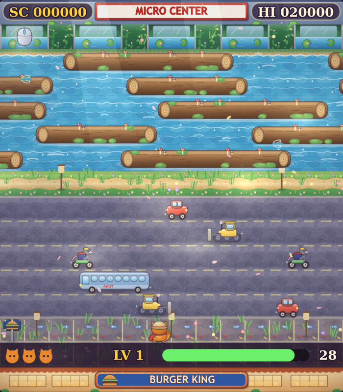
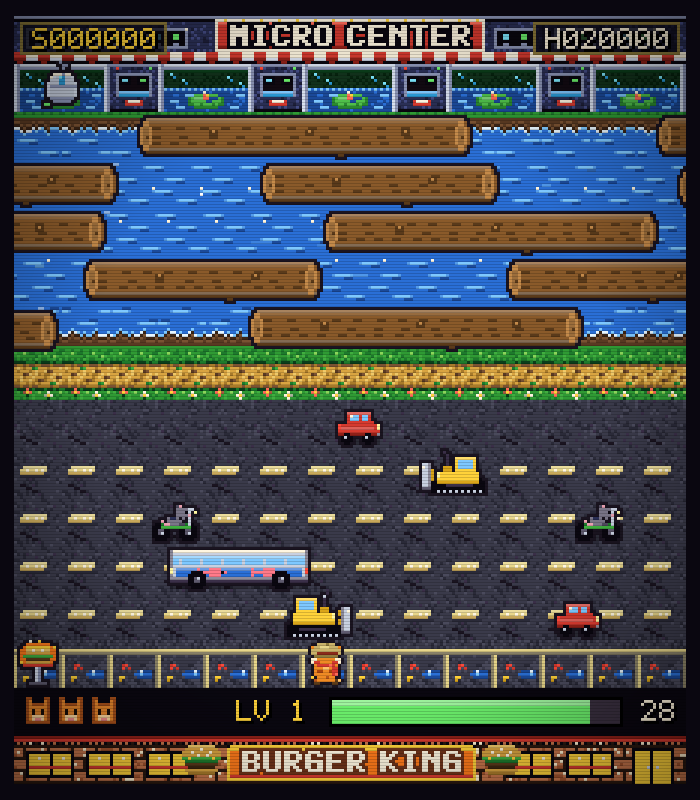
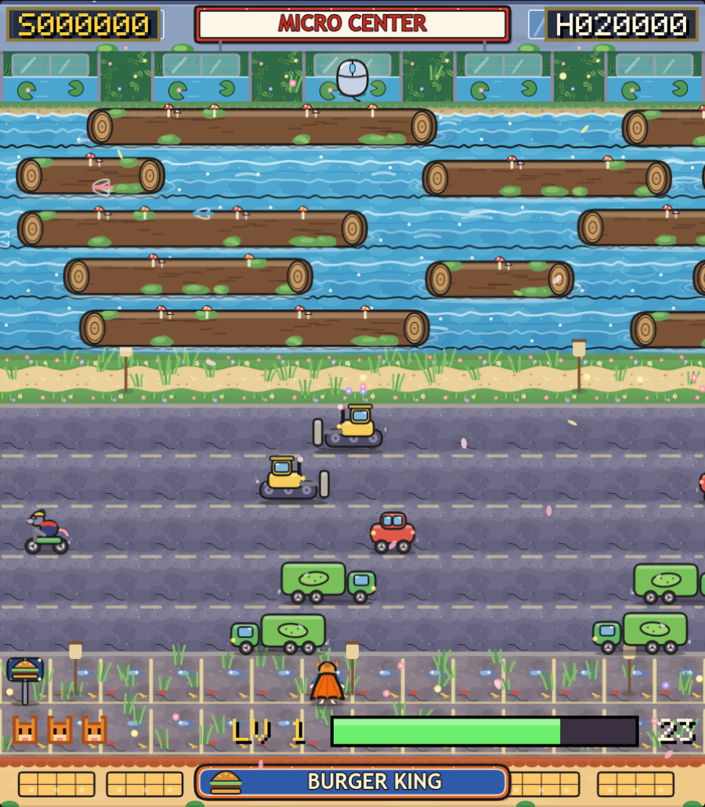
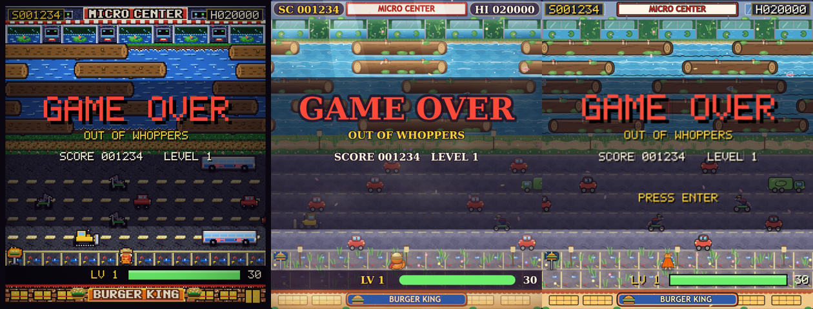
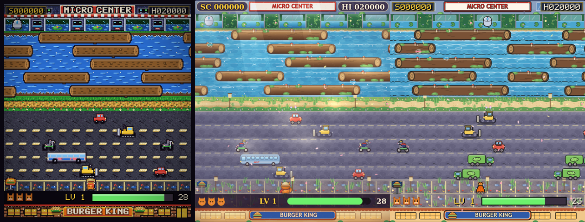
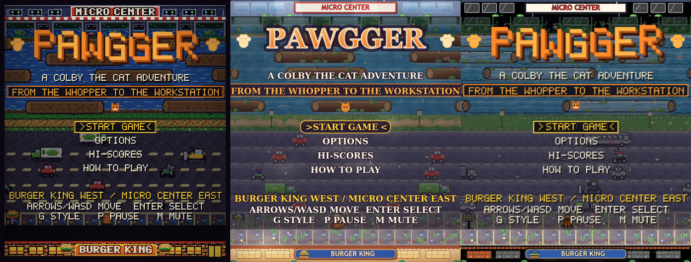
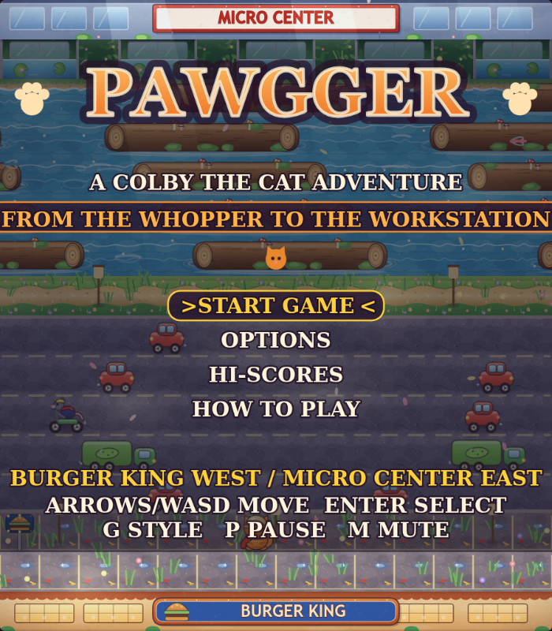
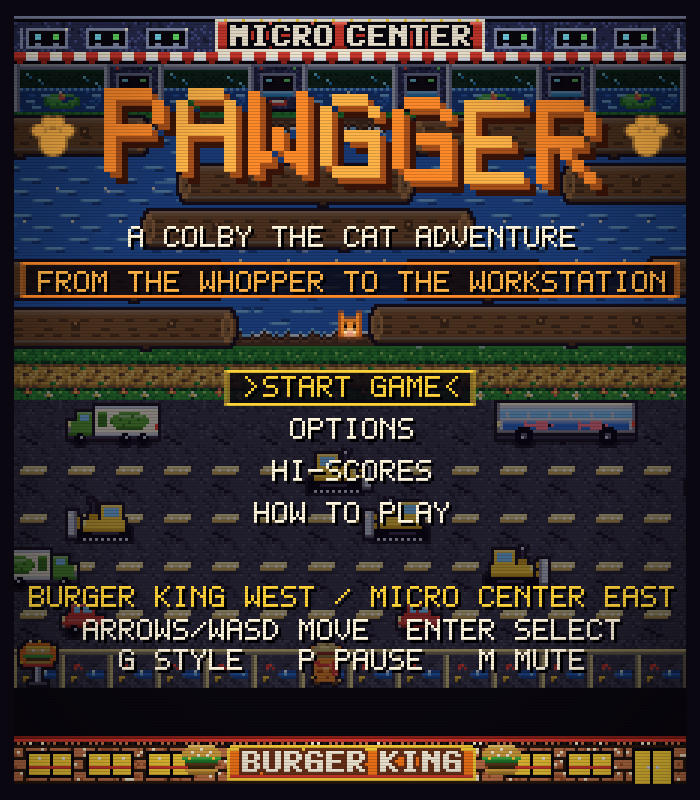
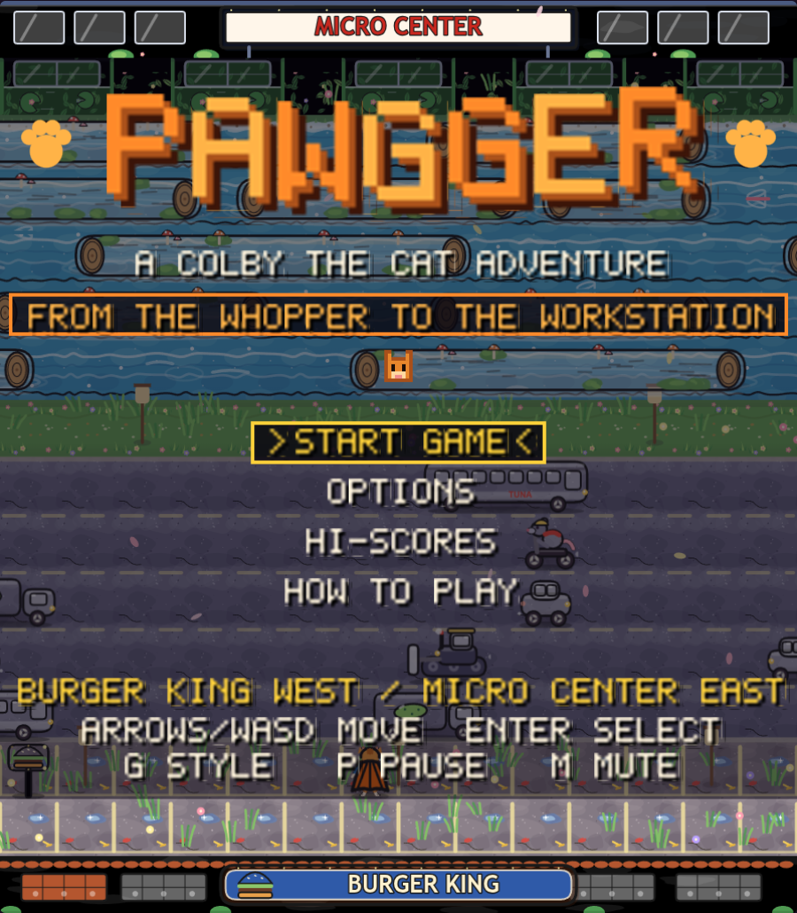
Features
- Three switchable styles: retro 8-bit, ghibli painterly, and toon (Colby and Pete from the character library), with G to cycle or ?style=retro|ghibli|toon in the URL
- Burger King to Micro Center story: start in the Burger King lot, finish at the Micro Center home bays
- Day, dusk and night levels with matching music and sky grading
- Home bays: a computer mouse (200 points) and a graphics card (150 points) as bonuses, nerds cheer when a level clears
- Pickups: tuna, sardine, gold, collar, a whopper and fries
- Generated levels, checked by a validator so every level is fair
- Autopilot bot: clears levels 1-10 on seeds 1-10
- 241 tests, zero dependencies, single-file build for offline play
Controls
| Arrow keys / WASD | Hop (one cell per press) |
|---|---|
| Space / Z / X | Jump |
| Enter | Confirm |
| Escape | Back |
| P | Pause |
| G | Cycle style: retro, ghibli, toon |
How it was made
art-colby
`src/art/colby.js` exporting `build()` with all 10 colby ART names: colby_up/down/left/right (2 frames, crouched/stretched; left = flipX of right), colby_squash (3), colby_drown (4), colby_home (2), colby_life (10x10), pete_walk (24x16, fedora/shades/gold tooth/pinstripes), pete…
`src/art/colby.js` exporting `build()` with all 10 colby ART names: colby_up/down/left/right (2 frames, crouched/stretched; left = flipX of right), colby_squash (3), colby_drown (4), colby_home (2), colby_life (10x10), pete_walk (24x16, fedora/shades/gold tooth/pinstripes), pete…
art-fx
src/art/fx.js (retro PixBuf, defs.PAL only): logo 192x48 (extruded gold-to-orange PAWGGER, paw print in first G), title_scene 224x96 (night sky, big moon, jungle ridge, palms, Colby on log in river, Pete's limo on road, city lights), cursor_paw, fx_splash/puff/star/bubble, six t…
src/art/fx.js (retro PixBuf, defs.PAL only): logo 192x48 (extruded gold-to-orange PAWGGER, paw print in first G), title_scene 224x96 (night sky, big moon, jungle ridge, palms, Colby on log in river, Pete's limo on road, city lights), cursor_paw, fx_splash/puff/star/bubble, six t…
art-ghibli-chars
- `src/art/ghibli/characters.js` (module `colby`: Colby all facings, squash, drown, home, life, Pete walk/taunt), `vehicles.js` (car, racer, bike, dozer, truck, bus, limo, roller, glow_head), `river.js` (3 logs with moss + mushrooms, turtle up/sink/under, croc closed/open, tile_…
- `src/art/ghibli/characters.js` (module `colby`: Colby all facings, squash, drown, home, life, Pete walk/taunt), `vehicles.js` (car, racer, bike, dozer, truck, bus, limo, roller, glow_head), `river.js` (3 logs with moss + mushrooms, turtle up/sink/under, croc closed/open, tile_…
art-ghibli-scene
`src/art/ghibli/world.js` (all 19 `world` names) and `src/art/ghibli/fx.js` (all 14 `fx` names), both `build(kit)` (also default export) on painter-kit, cell units x GHIBLI_SCALE. World: soft asphalt tiles with painted dash, mossy curb, flower median path (2 frames sway), Burger…
`src/art/ghibli/world.js` (all 19 `world` names) and `src/art/ghibli/fx.js` (all 14 `fx` names), both `build(kit)` (also default export) on painter-kit, cell units x GHIBLI_SCALE. World: soft asphalt tiles with painted dash, mossy curb, flower median path (2 frames sway), Burger…
art-river
`src/art/river.js` (`build()`): log_s/m/l (bark furrows, knots, ring end caps), turtle_up (2, paddling), turtle_sink (3: foam ring, half-submerged blue-tinted shell with bubbles, ghost shell with red "!" marks), turtle_under (2, bubbles and faint shadow, no outline), croc_closed…
`src/art/river.js` (`build()`): log_s/m/l (bark furrows, knots, ring end caps), turtle_up (2, paddling), turtle_sink (3: foam ring, half-submerged blue-tinted shell with bubbles, ghost shell with red "!" marks), turtle_under (2, bubbles and faint shadow, no outline), croc_closed…
art-vehicles
`src/art/vehicles.js` exports `build()` -> {car, racer, bike, dozer, truck, bus, limo, roller, glow_head}, PixBuf only, PAL colours only, 1px PAL.outline (diagonal), all facing right, wheels on the bottom row. Red sedan, yellow wedge racer with spoiler/flame, rat-on-scooter bike…
`src/art/vehicles.js` exports `build()` -> {car, racer, bike, dozer, truck, bus, limo, roller, glow_head}, PixBuf only, PAL colours only, 1px PAL.outline (diagonal), all facing right, wheels on the bottom row. Red sedan, yellow wedge racer with spoiler/flame, rat-on-scooter bike…
art-world
`src/art/world.js` (export `build`, default): all 19 manifest names of module `world`: seamless `tile_road`, `tile_road_dash`, `tile_curb`, 2-frame `tile_median` (swaying fronds, blinking flowers) and `tile_start` (Burger King lot with stall lines, ketchup, fry, puddle glint); `…
`src/art/world.js` (export `build`, default): all 19 manifest names of module `world`: seamless `tile_road`, `tile_road_dash`, `tile_curb`, 2-frame `tile_median` (swaying fronds, blinking flowers) and `tile_start` (Burger King lot with stall lines, ketchup, fry, puddle glint); `…
audio-music
- `src/audio/music.js`: audio-kit tracker songs for every `defs.MUSIC` name in two sets, `SONGS` (retro: pulse lead, arp, triangle bass, drums, bpm 84-150) and `SONGS_GHIBLI` (flute-like triangle lead, plucked-triangle waltz arpeggios in groups of 3, two soft pad voices, waltz b…
- `src/audio/music.js`: audio-kit tracker songs for every `defs.MUSIC` name in two sets, `SONGS` (retro: pulse lead, arp, triangle bass, drums, bpm 84-150) and `SONGS_GHIBLI` (flute-like triangle lead, plucked-triangle waltz arpeggios in groups of 3, two soft pad voices, waltz b…
audio-sfx
- `src/audio/sfx.js`: pure-data recipes for all 23 `defs.SFX` names in two styles. `SFX_RECIPES` is retro (square/saw/triangle/noise chiptune). `SFX_RECIPES_GHIBLI` is soft (sine/triangle bells with a faint FM shimmer, brushed noise, long attacks). Built on `src/kits/audio-kit` …
- `src/audio/sfx.js`: pure-data recipes for all 23 `defs.SFX` names in two styles. `SFX_RECIPES` is retro (square/saw/triangle/noise chiptune). `SFX_RECIPES_GHIBLI` is soft (sine/triangle bells with a faint FM shimmer, brushed noise, long attacks). Built on `src/kits/audio-kit` …
factory-extract
Staged under ../game-factory/proposed/pawgger/: new/src/lib/grid-hop.js (+test), new/src/lib/grid-hop-autopilot.js (generic time-expanded A* over hop macros, +5 tests), tools_web_pkg_build-web.mjs.proposed (unified diff, 4 hunks), tools_web_shot.mjs.proposed, README.md (review/a…
Staged under ../game-factory/proposed/pawgger/: new/src/lib/grid-hop.js (+test), new/src/lib/grid-hop-autopilot.js (generic time-expanded A* over hop macros, +5 tests), tools_web_pkg_build-web.mjs.proposed (unified diff, 4 hunks), tools_web_shot.mjs.proposed, README.md (review/a…
factory-sop
Staged under `../game-factory/proposed/pawgger/`: skill `new/skills/ship-showcase.md`; `new/docs/SHIP-SHOWCASE.md`; `new/templates/web-project/` with `README.template.md`, `shots.config.json`, `tools/shots.mjs` (shot x style driver, `--hero` builds the GIF), `tools/make-gif.sh` …
Staged under `../game-factory/proposed/pawgger/`: skill `new/skills/ship-showcase.md`; `new/docs/SHIP-SHOWCASE.md`; `new/templates/web-project/` with `README.template.md`, `shots.config.json`, `tools/shots.mjs` (shot x style driver, `--hero` builds the GIF), `tools/make-gif.sh` …
lane-gen
- `src/levels/lanes.js`: closed-form lane model (`itemX`, `turtleState`, `turtleCarries`, `crocState`, `crocParts`, `supports`, `isLethalHead`, `findSupport`, `itemRect`, `roadHit`, `visibleItems`, `speedMul`, `laneAtRow`, `carryV`) plus the shared fairness analysis (`minRoadGap…
- `src/levels/lanes.js`: closed-form lane model (`itemX`, `turtleState`, `turtleCarries`, `crocState`, `crocParts`, `supports`, `isLethalHead`, `findSupport`, `itemRect`, `roadHit`, `visibleItems`, `speedMul`, `laneAtRow`, `carryV`) plus the shared fairness analysis (`minRoadGap…
painter-kit
`src/kits/painter-kit/{index.js,surface.js,README.md,example.html}`: makeSurface (OffscreenCanvas/DOM canvas/Node recording shim), blob, roundRect, leaf, cloud, lin, radial, softShadow, paperGrain (capped 6000 specks), washFill, brush, sway, rng, colour helpers (parseColor/rgba/…
`src/kits/painter-kit/{index.js,surface.js,README.md,example.html}`: makeSurface (OffscreenCanvas/DOM canvas/Node recording shim), blob, roundRect, leaf, cloud, lin, radial, softShadow, paperGrain (capped 6000 specks), washFill, brush, sway, rng, colour helpers (parseColor/rgba/…
qa-bot
- `src/sim/autopilot.js`: `createBot({skill, seed})` -> `{decide(g), reset(), stats}`; exported `plan(g, slack, maxNodes)` for tests. A* over (row, x, tick) with macros wait(4 ticks)/up/down/left/right, mirroring game.js step order exactly (cmd, t+=DT, hop progress, landing, car…
- `src/sim/autopilot.js`: `createBot({skill, seed})` -> `{decide(g), reset(), stats}`; exported `plan(g, slack, maxNodes)` for tests. A* over (row, x, tick) with macros wait(4 ticks)/up/down/left/right, mirroring game.js step order exactly (cmd, t+=DT, hop progress, landing, car…
render-ghibli
`src/render/ghibli.js` exporting `createGhibliRenderer(ctx,{settings,visibleItems,bus,sprites,makeCanvas})` -> `{draw(g,alpha,dt), attach(bus), detach, setSettings, setSprites, items, clearFx, particleCount, sprites, missing}`. Gradient sky per theme with sun/moon/stars and drif…
`src/render/ghibli.js` exporting `createGhibliRenderer(ctx,{settings,visibleItems,bus,sprites,makeCanvas})` -> `{draw(g,alpha,dt), attach(bus), detach, setSettings, setSprites, items, clearFx, particleCount, sprites, missing}`. Gradient sky per theme with sun/moon/stars and drif…
render
- `src/art/registry.js`: `buildArt({style, modules?, kit?})` returns `sprites {get, has, mirror(name,i), names, size, missing, ready}`. Retro loads `src/art/{colby,vehicles,river,world,fx}.js`, ghibli loads `src/art/ghibli/{characters,vehicles,river,world,fx}.js` (with painter-k…
- `src/art/registry.js`: `buildArt({style, modules?, kit?})` returns `sprites {get, has, mirror(name,i), names, size, missing, ready}`. Retro loads `src/art/{colby,vehicles,river,world,fx}.js`, ghibli loads `src/art/ghibli/{characters,vehicles,river,world,fx}.js` (with painter-k…
sim-core
- `src/lib/grid-hop.js`: generic hop (makeHop/hopTarget/startHop/stepHop/queueHop/takeQueued, `limit` callback). Factory candidate. - `src/sim/player.js`: createPlayer/resetPlayer/setMode (mode and frame anim set together)/animatePlayer. - `src/sim/game.js`: `createGame` per sec…
- `src/lib/grid-hop.js`: generic hop (makeHop/hopTarget/startHop/stepHop/queueHop/takeQueued, `limit` callback). Factory candidate. - `src/sim/player.js`: createPlayer/resetPlayer/setMode (mode and frame anim set together)/animatePlayer. - `src/sim/game.js`: `createGame` per sec…
sim-extras
- `src/sim/pete.js`: exports `TAUNTS` (12 ALL CAPS lines, each <= 28 chars, 6 about Burger King / Micro Center / nerds), `initPete(g)`, `updatePete(g, dt)`, `peteRect(g)`. - `none` -> mode `hidden`. `taunt` -> mode `taunt`, emits `pete_taunt` every 4-6 s (seeded), no-repeat. `pa…
- `src/sim/pete.js`: exports `TAUNTS` (12 ALL CAPS lines, each <= 28 chars, 6 about Burger King / Micro Center / nerds), `initPete(g)`, `updatePete(g, dt)`, `peteRect(g)`. - `none` -> mode `hidden`. `taunt` -> mode `taunt`, emits `pete_taunt` every 4-6 s (seeded), no-repeat. `pa…
ui-shell
- `src/main.js`: fixed-step 1/60 loop with accumulator (cap 8 steps/frame), hop edge buffering (UI acts -> one pending hop carried until a sim step consumes it), modes title / options / help / hi / entry / gameover / play (+pause) / attract, query params (autostart, level, seed,…
- `src/main.js`: fixed-step 1/60 loop with accumulator (cap 8 steps/frame), hop edge buffering (UI acts -> one pending hop carried until a sim step consumes it), modes title / options / help / hi / entry / gameover / play (+pause) / attract, query params (autostart, level, seed,…
Credits
- Design, code, pixel art, painted art and music: the Pawgger swarm (see the swarm section)
- Colby and Pete in the toon style are built from the character library